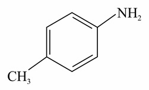

Filter questions
Q1
CHEM-2021-0101-S1-Q040
2021 | 26 Aug | Shift 1
—
MCQ
Chemistry · Electrochemistry
Given below are two statements: Statement I: The limiting molar conductivity of KCl (strong electrolyte) is higher compared to that of CH3COOH (weak electrolyte). Statement II: Molar conductivity decreases with decrease in concentration of electrolyte. In the light of the above statements, choose the most appropriate answer from the options given below:
Answer: D
Q2
CHEM-2021-0101-S1-Q059
2021 | 17 Mar | Shift 1
—
Integer
Chemistry · Chemical Kinetics
For a certain first order reaction 32% of the reactant is left after 570 s. The rate constant of this reaction is ×10−3 s−1. (Round off to the Nearest Integer). [Given: log10 2 = 0.301, ln 10 = 2.303 ]
Answer: 2
Q3
CHEM-2023-0101-S1-Q040
2023 | 06 Apr | Shift 1
—
MCQ
Chemistry · Biomolecules
Match List I with List II LIST I – Enzymatic reaction LIST II - Enzyme A Sucrose→ Glucose and Fructose I Zymase Glucose → ethyl alcohol and Pepsin B CO2 II C Starch → Maltose III Invertase D Proteins → Amino acids IV Diastase Choose the correct answer from the options given below.
Answer: B
Q4
PHY-2022-0101-S2-Q029
2022 | 28 Jun | Shift 2
—
Integer
Physics · Semiconductors & Electronic Devices
A Zener of breakdown voltage = 8 V and maximum Zener current, = 10 mA is subjected to an input VZ IZM voltage Vi = 10 V with series resistance R = 100 Ω. In the given circuit RL represents the variable load resistance. The ratio of maximum and minimum value of RL is _____.
Answer: 2
Q5
CHEM-2022-0101-S1-Q058
2022 | 27 Jun | Shift 1
—
Integer
Chemistry · Chemical Kinetics
The rate constant for a first order reaction is given by the following equation: lnk = 33.24 −2.0×104 T K The Activation energy for the reaction is given by kJmol−1. (In Nearest integer) (Given: R = 8.3 J K−1 mol−1 )
Answer: 166
Q6
PHY-2021-0101-S1-Q027
2021 | 27 Aug | Shift 1
—
Integer
Physics · Current Electricity
A uniform conducting wire of length is 24a, and resistance R is wound up as a current carrying coil in the shape of an equilateral triangle of side a and then in the form of a square of side a. The coil is connected to a voltage source V0. The ratio of magnetic moment of the coils in case of equilateral triangle to that for square is where is ____________. 1: √y y
Answer: 3
Q7
CHEM-2021-0101-S2-Q042
2021 | 25 Jul | Shift 2
—
MCQ
Chemistry · Biomolecules
Match List I with List II: (Both having metallurgical terms) List-I List-II Concentration of Ag
Answer: A
Q8
PHY-2024-0101-S1-Q010
2024 | 29 Jan | Shift 1
—
MCQ
Physics · Electrostatics
Two charges of 5Q and −2Q are situated at the points (3a, 0) and (−5a, 0) respectively. The electric flux through a sphere of radius 4a having centre at origin is:
Answer: B
Q9
CHEM-2021-0101-S2-Q054
2021 | 25 Feb | Shift 2
—
Integer
Chemistry · Electrochemistry
Among the following, number of metal/s which can be used as electrodes in the photoelectric cell is ___. (Integer answer) (A) Li (B) Na (C) Rb (D) Cs

Answer: 1
Q10
PHY-2024-0101-S2-Q012
2024 | 31 Jan | Shift 2
—
MCQ
Physics · Current Electricity
The resistance per centimeter of a meter bridge wire is r, with X Ω resistance in left gap. Balancing length from left end is at with resistance in right gap. Now the wire is replaced by another wire of 40 cm 25 Ω 2r resistance per centimeter. The new balancing length for same settings will be at
Answer: D
Q11
PHY-2023-0101-S1-Q019
2023 | 31 Jan | Shift 1
—
MCQ
Physics · Semiconductors & Electronic Devices
The effect of increase in temperature on the number of electrons in conduction band ( ne) and resistance of a semiconductor will be as:
Answer: C
Q12
CHEM-2021-0101-S1-Q050
2021 | 18 Mar | Shift 1
—
MCQ
Chemistry · Biomolecules
A non-reducing sugar A hydrolyses to give two reducing mono saccharides. Sugar A is
Answer: D
Q13
PHY-2021-0101-S1-Q030
2021 | 18 Mar | Shift 1
—
Integer
Physics · Semiconductors & Electronic Devices
An npn transistor operates as a common emitter amplifier with a power gain of 106. The input circuit resistance is 100 Ω and the output load resistance is 10 kΩ. The common emitter current gain will be (Round off to the Nearest Integer) β
Answer: 100
Q14
CHEM-2021-0101-S1-Q038
2021 | 25 Jul | Shift 1
—
MCQ
Chemistry · Chemical Kinetics
For the following graphs, Choose from the options given below, the correct one regarding order of reaction is:
Answer: B
Q15
PHY-2022-0101-S1-Q013
2022 | 27 Jun | Shift 1
—
MCQ
Physics · Current Electricity
A 72 Ω galvanometer is shunted by a resistance of 8 Ω. The percentage of the total current which passes through the galvanometer is
Answer: B
Q16
PHY-2022-0101-S1-Q008
2022 | 28 Jun | Shift 1
—
MCQ
Physics · Electrostatics
A radar sends an electromagnetic signal of electric field (E0) = 2.25 V and magnetic field (B0) = 1.5 × 10−8 T which strikes a target on line of sight at a distance of 3 km in a medium. After that, a part of signal (echo) reflects back towards the radar with same velocity and by same path. If the signal was transmitted at time from radar, then after how much time echo will reach to the radar? t = 0
Answer: B
Q17
PHY-2024-0101-S2-Q019
2024 | 08 Apr | Shift 2
—
MCQ
Physics · Units & Measurements
Least count of a vernier caliper is 20 N cm. The value of one division on the main scale is 1 mm. Then the number of divisions of main scale that coincide with N divisions of vernier scale is:
Answer: C
Q18
CHEM-2025-0101-S2-Q032
2025 | 22 Jan | Shift 2
—
MCQ
Chemistry · Biomolecules
Given are statements for certain thermodynamic variables,
Answer: D
Q19
PHY-2021-0101-S1-Q011
2021 | 18 Mar | Shift 1
—
MCQ
Physics · Current Electricity
In a scries LCR resonance circuit, if we change the resistance only, from a lower to higher value:
Answer: A
Q20
MATH-2024-0101-S2-Q078
2024 | 29 Jan | Shift 2
—
MCQ
Mathematics · Vectors
Let xˆi yˆj zˆk π π 2π −→v|2 √2ˆi 1 1 ˆk, 1 ˆj 1 ˆk a unit vector ˆu = + + make angles 2, 3 and 3 with the vectors + √2 √2 + √2 and →v ˆk √2ˆi 1 + 1 ˆj respectively. If = √2ˆi 1 + 1 ˆj + 1, then |^u is equal to 11 √2 √2 √2 5
Answer: B
Q21
MATH-2022-0101-S1-Q089
2022 | 25 Jun | Shift 1
—
Integer
Mathematics · Vectors
Let θ be the angle between the vectors →a and where →a= 4, 3 and θ∈π 4, π 3. Then 2 2 →a- →b× →a+ →b + 4→a· →b is equal to ______
Answer: 576
Q22
MATH-2023-0101-S2-Q086
2023 | 30 Jan | Shift 2
—
Integer
Mathematics · Vectors
Let →a and b be two vectors. Let →a = 1, b = 4 and →a ⋅ b = 2. If →c = × −3 b, then the value of b ⋅→c is (1) −24 (2) −48 (3) −84 (4) −60 →v
Answer: 432
Q23
PHY-2022-0101-S1-Q026
2022 | 27 Jun | Shift 1
—
Integer
Physics · Current Electricity
A cell, shunted by a 8 Ω resistance, is balanced across a potentiometer wire of length 3 m. The balancing length is 2 m when the cell is shunted by 4 Ω resistance. The value of internal resistance of the cell will be _____ Ω.
Answer: 8
Q24
MATH-2024-0101-S2-Q077
2024 | 01 Feb | Shift 2
—
MCQ
Mathematics · Vectors
Consider a ΔABC where A1, 3, 2, B−2, 8, 0 and C3, 6, 7. If the angle bisector of ∠BAC meets the line BC at D, →AD →AC then the length of the projection of the vector on the vector is:
Answer: A
Q25
MATH-2024-0101-S1-Q089
2024 | 31 Jan | Shift 1
—
Integer
Mathematics · Vectors
Let →a and → be two vectors such that →a= → and →a⋅ → 2. If →c= →a× → → and the angle between b 1, b= 4 b= 2 b−3 b →b and→c is α, then 192sin2α is equal to _________
Answer: 48
Q26
MATH-2023-0101-S1-Q076
2023 | 06 Apr | Shift 1
—
MCQ
Mathematics · Vectors
Let ^i ^j ^k, ^i ^j ^k, ^i ^j ^k the position vectors of the points A, B, C and D be 5 + 5 + 2λ + 2 + 3 - 2 + λ + 4 and - ^i + 5 ^j + 6 ^k. Let the set S= {λ∈R: the points A, B, C and D are coplanar }. The ∑λ∈S(λ+ 2 2 is equal ) to
Answer: D
Q27
CHEM-2021-0101-S2-Q060
2021 | 01 Sep | Shift 2
—
Integer
Chemistry · Biomolecules
A peptide synthesized by the reactions of one molecule each of Glycine, Leucine, Aspartic acid and Histidine will have _____ peptide linkages.

Answer: 3
Q28
PHY-2021-0101-S2-Q001
2021 | 27 Jul | Shift 2
—
MCQ
Physics · Units & Measurements
A physical quantity y is represented by the formula y = m2r−4 2 If the percentage errors found in y, m, r, l and g are 18, 1, 0.5, 4 and p respectively, then find the value of x and p.
Answer: C
Q29
PHY-2023-0101-S1-Q026
2023 | 31 Jan | Shift 1
—
Integer
Physics · Electrostatics
Expression →E= ^i for an electric field is given by 4000 x2 V m−1. The electric flux through the cube of side 20 cm when placed in electric field (as shown in the figure) is ______ V cm.
Answer: 640
Q30
MATH-2023-0101-S1-Q066
2023 | 13 Apr | Shift 1
—
MCQ
Mathematics · Binomial Theorem
Let α be the constant term in the binomial expansion of − 6, n ≤15. If the sum of the coefficients x 3 2 of the remaining terms in the expansion is 649 and the coefficient of x−n is λα, then λ is equal to ________.
Answer: B